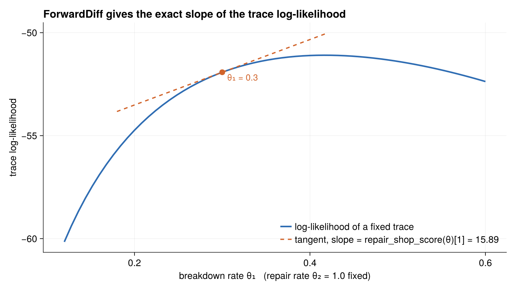

The Likelihood Workflow
The repair shop's main job is to demonstrate a three-step pattern that ChronoSim's record/replay machinery exists to support:
- Record one run under a
RecordMinimalpolicy, capturing aMinimalRecord. - Check the record with
effect_check— replaying it must reproduce the forward log-likelihood exactly,===and not≈. - Differentiate the trace log-likelihood in
θwith ForwardDiff, evaluating at aθthe forward run never saw.
The example then verifies the resulting gradient against a hand-derived analytic score, so this is an oracle-checked demonstration rather than a demo that merely runs.
Recording a run
record_repair_shop runs the simulation once under the RecordMinimal policy and returns the captured record together with the policy:
function record_repair_shop(θ; machine_cnt=3, horizon=20.0, seed=90210)
policy = RecordMinimal(; initializer=init!)
sim = SimulationFSM(Shop(machine_cnt), _events();
step_likelihood=true, policy=policy, params=θ,
sampler=NextReactionMethod(), key_type=Tuple)
stop_condition = (shop, step, event, when) -> when > horizon
ChronoSim.run(sim, init!, stop_condition)
return (record=minimal_record(policy; horizon=horizon), policy=policy)
endA MinimalRecord holds just enough to replay: the initializer, the ordered sequence of (clock key, firing time) pairs, the horizon, and a fire_random flag recording whether any fire! body drew randomness. For the repair shop that flag is false, which is why replay is deterministic.
Checking the record exactly
effect_check replays the record through trace_likelihood and demands exact floating-point equality with the forward log-likelihood. Because forward execution and trace evaluation share one code path, any difference is a bug, not roundoff — so the check is ===, not ≈:
factory = () -> SimulationFSM(Shop(machine_cnt), RepairShop._events();
step_likelihood=true, params=θ,
sampler=NextReactionMethod(), key_type=Tuple)
res = ChronoSim.effect_check(factory, RepairShop.init!, policy)
@test res.applicable
@test res.passed
@test res.forward === res.replay # exact Float64 identity, not isapprox
@test isfinite(res.forward)Differentiating the trace log-likelihood
Scoring is done by rebuilding a fresh evaluation simulation and calling trace_likelihood with the record and a chosen θ. The likelihood_eltype=eltype(θ) keyword lets dual numbers accumulate without being truncated to Float64, and censor=true adds the finite-horizon survival tail:
function repair_shop_loglik(θ, record; machine_cnt=3)
sim = SimulationFSM(Shop(machine_cnt), _events();
step_likelihood=true, params=θ, likelihood_eltype=eltype(θ),
sampler=NextReactionMethod(), key_type=Tuple)
return trace_likelihood(sim, init!, record; params=θ, censor=true).loglikelihood
end
repair_shop_score(θ, record; machine_cnt=3) =
ForwardDiff.gradient(p -> repair_shop_loglik(p, record; machine_cnt), θ)
One record from record_repair_shop([0.3, 1.0]) is fixed; sweeping the breakdown rate θ₁ traces the trace log-likelihood, and the dashed line is the tangent whose slope is repair_shop_score(θ)[1] — ForwardDiff recovers the exact slope of the curve.
The trace is fixed; only the evaluation parameters vary. That makes the score a deterministic function of (θ, record) — the same property landspread demonstrates, applied here to a differentiable gradient.
The whole workflow is wrapped up in repair_shop_demo, which records, checks, and scores, printing the firing count, the log-likelihood, and the score.
The analytic oracle
Because both clocks are exponential, the trace log-likelihood has a closed form. With n_break breakdowns, n_repair repairs, and exposures E_run (total machine-time spent running) and E_down (spent down):
loglik = n_break·log(λ_b) + n_repair·log(λ_r) − λ_b·E_run − λ_r·E_downwhich differentiates to
dloglik/dλ_b = n_break/λ_b − E_run
dloglik/dλ_r = n_repair/λ_r − E_downThe test in test/test_repairshop.jl implements exactly this in analytic_score, walking the record's firings to accumulate the exposures and counts and adding the censoring tail from the last firing to the horizon.
The tests
test/test_repairshop.jl is thorough — three testsets built on the hand-derived oracle.
The first pins that the recorded trajectory is usable and reproducible: it draws no randomness, has the expected horizon, is long enough to be worth testing, and comes out identical from the same seed:
(; record, policy) = RepairShop.record_repair_shop(θ; machine_cnt=3, horizon=20.0, seed=90210)
@test record.fire_random == false
@test record.horizon == 20.0
@test length(record.firings) > 10
again = RepairShop.record_repair_shop(θ; machine_cnt=3, horizon=20.0, seed=90210)
@test again.record.firings == record.firingsThe second is the effect_check example shown above — replay reproduces the forward log-likelihood to exact Float64 identity.
The third checks the ForwardDiff score against the analytic oracle, and then re-scores the same fixed trace at a different θ and checks that too — showing the score is correct away from the parameters that generated the trace, which is the property estimators rely on:
g = RepairShop.repair_shop_score(θ, record; machine_cnt)
@test isapprox(g, analytic_score(θ, record, machine_cnt); rtol=1e-9)
θ2 = [0.5, 0.7]
g2 = RepairShop.repair_shop_score(θ2, record; machine_cnt)
@test isapprox(g2, analytic_score(θ2, record, machine_cnt); rtol=1e-9)Note the tolerance: rtol=1e-9. The ForwardDiff gradient and the hand-derived formula agree to nine digits, because they are computing the same thing two ways.
The gradient estimators page covers the companion example, which moves from differentiating a fixed trace to estimating the gradient of an expectation over trajectories.